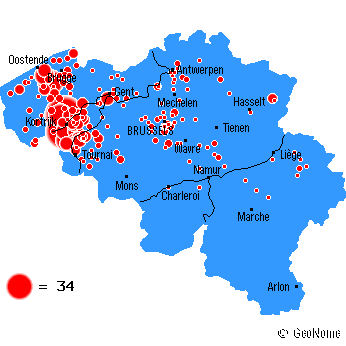

OK, I'm no genealogist, so if someone can provide me with more information, that would be very helpful.
There are however two nice pieces of information added to this site. The first one is an idea of the distribution of the name “Seynaeve”.
|  |
| This image was taken from the geonome webpage. It used to provide a distribution of family names in Belgium but doesn't seem to be active anymore. |
By including the alternative names “Seynhaeve”, “Seynave”, … the shape of the distribution does not change significantly. As can be seen, the main concentration of people with our last name is on the axis Brugge-Kortrijk. This means that the main concentration of people with the same last name is at the sea coast. This is rather significant.
After drawing some conclusions from the distribution, we can guess that the name originated from the sea coast. This suspicion is further strengthened when you decompose the name: “Seyn-Aeve”. “Seyn” is phonetically close to the contemporary “sein”, which means sign. “Aeve” used to be written “Haeven”, which leads to “haven”, which is a harbor. So, Seynaeve means a sign at the harbor: a lighthouse. This is indeed a name worthy the sea.
- Eric Seynaeve
My own homepage.
If you think you have a relevant link, please contact me.
All information is copyright © Eric Seynaeve, 2001 unless noted otherwise. If you wish to use some information, contact me for permission (which will most likely be granted).
Last change: 2001/10/14.